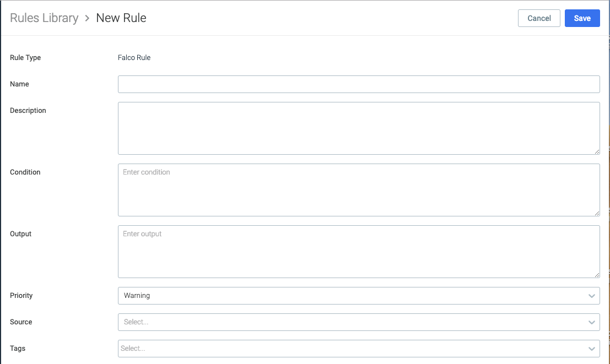

Manage Rules
Review Understanding Sysdig Secure Rules, and particularly Understanding the Rules Library to get started.
Access the Rules Library
Select
Policies > Rules Library.The Rules Library is displayed.
 |
Edit a Rule
Any rules published by Sysdig are default and are read-only. You can append to their lists and macros, but cannot change the core parameters. Default rules cannot be deleted.
Self-created rules can be freely edited.
Select
Policies > Rules Libraryand select a rule.The Rule Details panel opens on the right. You can review the parameters and append to macros and lists inline if desired.
Append to Falco Macros and Lists
Default Falco rules have a variety of macros and lists embedded in them. While these cannot be deleted from a default rule, you can append additional information onto them.
For example, consider the Policy DB Program Spawned Process in the screenshot above. The embedded rule is used to check that databases have not spawned illicit processes. You can see in the rule condition the Falco list : db_server_binaries.
To append items in a default list:
Click the
blue list textin the rule condition, or go toPolicies > Falco Listsand search for it by name.The list content is displayed. Click
Append.Enter the additional items (i.e. databases) you want to include in the rule and click
Save.The same process applies to macros.
Create a Rule
There are different interfaces for creating Falco rules vs. Fast rules.
Create a Falco Rule
From the Rules Library page, click
+Add Ruleand selectFalcofrom the drop-down.The New Rule page for the Falco rule type is displayed.
 Enter the parameters:
Name and Description: create a name and a meaningful description for the rule
Condition and Output: write the condition code and outputs required. See Supported Fields for more information.
Priority:This is a required field to meet the falco rule syntax.

Source: Define if the rule is detecting events using the Kubernetes Audit data source or using the standard syscall mechanisms
Tags: Select relevant tags from the drop-down or add your own custom tag
Click
Save.
Create a Fast Rule: Container Type
Fast rules are essentially whitelist/blacklist rules.
Suppose you want to itemize particular Cassandra database images to be allowed in the environment and blacklist any that have not been specified. In this case, a Container rule would be appropriate. (The other Fast rule types have similar entry fields, as appropriate to their type.)
From the Rules Library page, click
+Add Ruleand selectContainerfrom the drop-down.The New Rule page for the Container rule type is displayed.
Enter the parameters:
Name: Enter a Name, e.g. Allowed Cassandra Images.
Description: Enter a Description, e.g. List of permitted Cassandra images; all other to be blacklisted
If Matching/ If Not Matching: In this case, select
If Not Matchingto automatically trigger blacklist action for any Cassandra containers that don't match the entries below.Containers: Add the allowed Cassandra container names, e.g. cassandra.myorg.3.0.
Tags: Select relevant tags from the dropdown, e.g. database and container.
Click
Save.